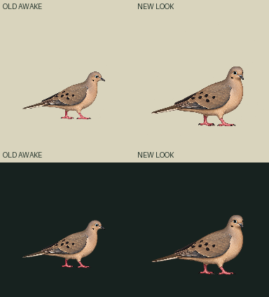
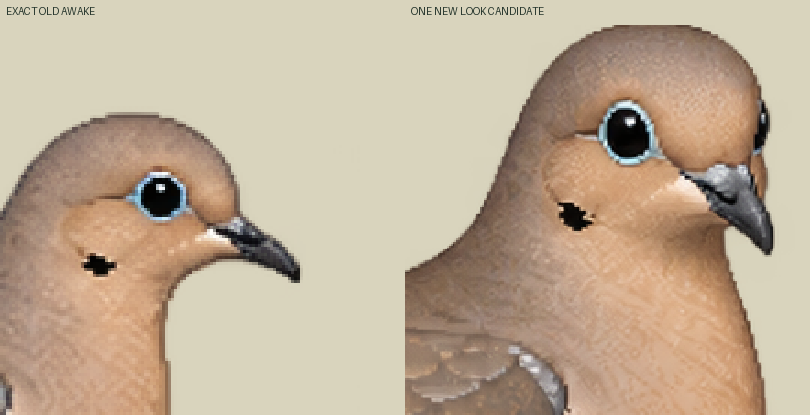
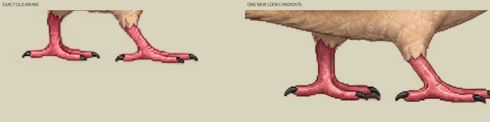

One native drawing, zero new neutral/blink/canon. Candidate continuity is held pending independent review: the native edit enlarged and repositioned body/feet and removed the old faint partial-alpha field. Both inherited foot-reference samples are now transparent. No new planted contacts are admitted.
Normal canvas192CSS/world units, density1; old bird118×68world. Declared pivot105,150 remains a registration origin. Old awake foot references97,149 /116,149 retain original alpha206/133; those same pixels in the new drawing have alpha0/0. New frame contacts[] is deliberate, not airborne or supported approval. Actual toe-region positive-alpha probes are inspection-only sidecar evidence. Direct whole native1254→192 nearest sampling only; no body fit, translation, painting or snap.
Source-only one-shot30Hz schedule: exact awake30ticks → study12ticks → exact awake30ticks. Two distinct drawings, no generated turn intermediates or smooth-turn claim. The requested30–40° yaw is art direction, not measured anatomy. Idle uses only unchanged awake.



Loading exact source atlas…
Unreviewed source proposal, activation none, runtime packet binding false. Canonical Zod/Sharp NOT_RUN; actual Mac named-look contract UNKNOWN. Existing standing/walk/drink sources remain untouched. The older Library candidate pack download failed and none of its pixels was inspected; portable preflight contains the exact limitation. No contact physics or runtime admission claim.